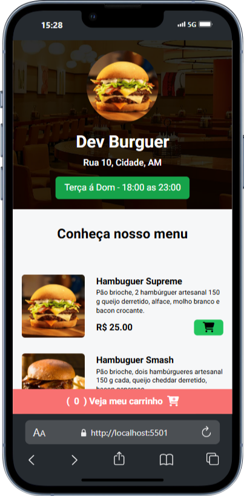
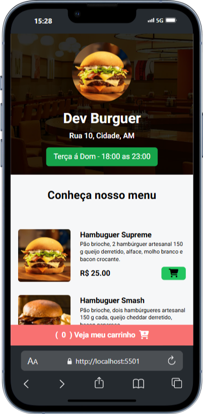

Jamilly Ferreira
Desenvolvedora Front-End
Sou uma desenvolvedora em formação, buscando oportunidades para aplicar meus conhecimentos e adquirir experiência prática.
"Criatividade é a inteligência se divertindo." – Albert Einstein
Projetos
Selecione um projeto
 
